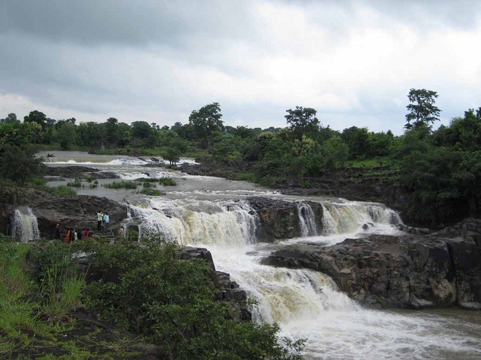
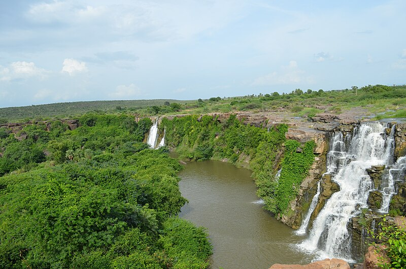
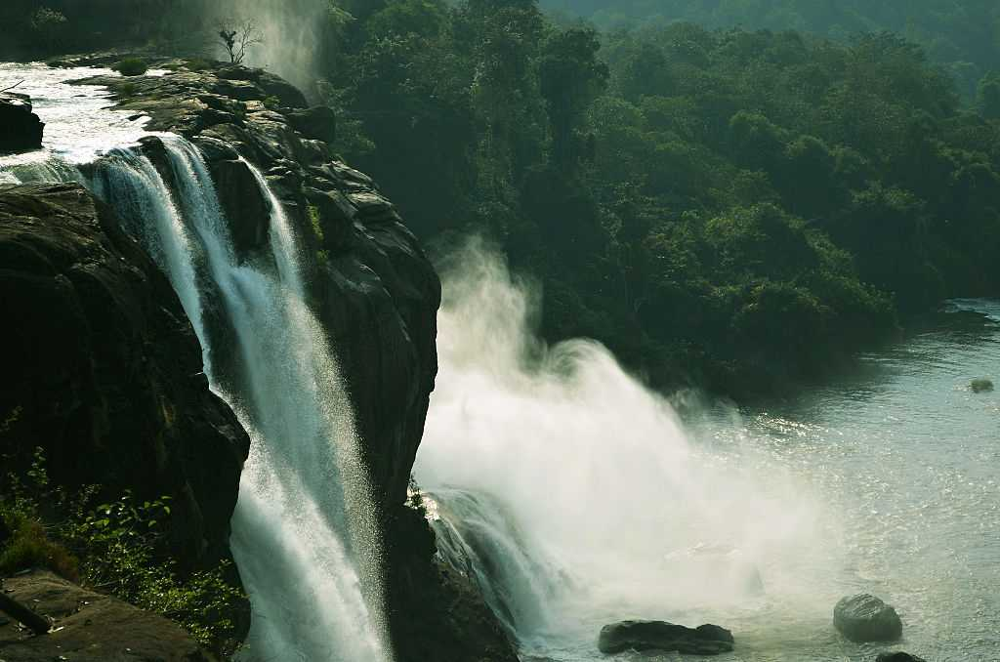

Telangana | At a distance of 40 Kms from Nirmal, 50 Kms from Adilabad, 257 Kms from Hyderabad and 22 Kms from Kuntala Falls, Pochera Falls is a pretty waterfall on Kadam River. The falls are located at a distance of 10 Kms from Neredikonda village between Nirmal & Adilabad (a diversion is required at Boath cross roads). Pochera Falls is one of the popular Tourist places in Telangana and also one of the best places to visit near Hyderabad. |
Andhra Pradesh | Ethipothala falls is formed from a tributary of river Krishna – Chandravakna river and is 70 ft high. The waterfall derives its name from Telugu words “Ehtu” and “Pothala” which means “Lift and pour”. It is situated 11 kms from Nagarjuna Sagar Dam. The sunset over the waterfalls makes for an amazing sight and making this one of the most beautiful waterfalls in Andhra Pradesh. It is also one of the biggest waterfalls near Vijaywada. |
Kerala | Located 60 km from the Thrissur district of Kerala, Athirapally Falls is a marvellous cascade of frothy waters that makes its way from the Anamudi mountains of the Western Ghats. Also called as Bahubali Waterfall, this 80 ft high and 330 ft wide marvel is the largest waterfall in Kerala. It is often referred to as the "Niagara Falls of India". From here, the Athirapally falls flows through the verdant greenery of Vazhachal Forest toward the Arabian Sea, creating a spectacular vista of scintillating water, emerald jungles and azure sky. |
 Karnataka | Jog Falls, locally known as Gersoppa Falls, has been awarded the title of ‘Niagara of India’ as it is the second highest and most beautiful waterfall in the country. Situated on the border of Shimoga and Uttara Kannada district, it falls from a height of 253m down the rocks. This waterfall is formed by the river Sharavathi and cascades in four streams, namely, Raja, Rani, Rocket and Roarer. When you reach the top of the waterfall and look at the view, you’ll be enchanted by nature’s beauty. |